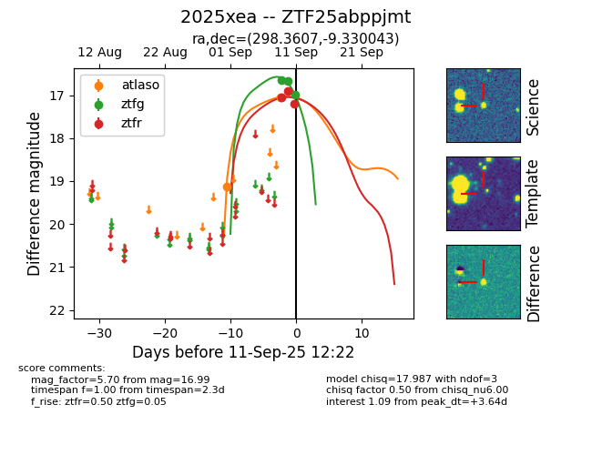

FINK: ZTF25abppjmt
Lasair: ZTF25abppjmt
ALeRCE: ZTF25abppjmt
TNS: 2025xea
YSE: 2025xea
ZTF25abppjmt (ztf,fink)
2025xea (tns,yse)
ATLAS25lsm (atlas)
equatorial (ra, dec) = (298.3607,-9.33004)
galactic (l, b) = (31.4842,-17.97704)

last atlasc=18.20, atlaso=18.03, ztfg=18.16, ztfr=18.23
3 atlasc, 6 atlaso, 9 ztfg, 8 ztfr detections